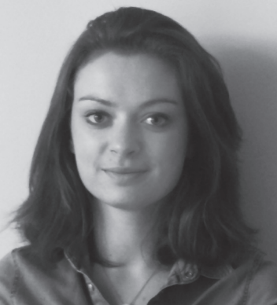

Okulista dr n. med.
Paulina Glasner-Smiatacz
Rejestracja: |
58 554 64 93 |
ul. Kwiatkowskiego 15/3 (Gdańsk, Osowa) |
Absolwentka Wydziału Lekarskiego Gdańskiego Uniwersytetu Medycznego (2013r.). W roku 2017r. obroniła pracę doktorską pt. „Ocena grubości warstw komórek nerwowych siatkówki w optycznej koherentnej tomografii w różnych stopniach zaawansowania rzutowo-remisyjnej postaci stwardnienia rozsianego”. W 2018r. uzyskała tytuł specjalisty Okulistyki, zdając w Paryżu europejski egzamin specjalizacyjny organizowany przez Europejską Radę Okulistyki (EBO). Autorka licznych publikacji naukowych, nauczyciel akademicki, adiunkt w Klinice Okulistyki Gdańskiego Uniwersytetu Medycznego (od 2015r.).
Odbyła liczne staże i kursy w ośrodkach polskich i zagranicznych, między innymi:
- staż w zakresie chirurgii witreoretinalnej w Rotterdam Eye Hospital( Holandia, 2021 rok).
- staż w zakresie terapii chorób plamki w Hadassah Hospital (Izrael, 2015r.)
- staż w zakresie terapii chorób plamki w Uniwersyteckim Centrum Klinicznym w Lubljanie (Słowenia, 2016r.)
- liczne staże w zakresie chirurgii okulistycznej w Europejskim Centrum szkoleniowym ESASO w Lugano (Szwajcaria).